Root and layouts
Compose the page
TravelSurface is the required root for one artifact. Only registered layout nodes, including heroes, sections, stacks, grids, panes, tabs and carousels, accept composed children.
A generative UI study for Omio
An agent composes interactive UI elements and binds them together, providing a user-friendly interface for complex user requests and promoting user engagement.
Ten prompts selected from the capability audit. Open a composition to use the actual registered components with every matching fare from 1–15 December 2026.
Prompts like: I’m going from London to Paris on 8 December 2026. Help me choose between saving money and saving time. Show the exact options and make the price-versus-duration tradeoff obvious.
Components used
Open this composition to load its interactive fares.
Prompts like: I'm planning London to Paris to Barcelona starting 8 December 2026, with two nights in Paris. Before I choose a fare, I want to change the first London-to-Paris journey on its own and see each change: where I'm leaving from and going to separately, the departure day, how I travel, my Paris stay and whether the journeys are ordered by cheapest, fastest or departure time. Put the travel type, Paris stay and ordering choices next to each other, and let me scroll through the matching fares with their details and add one to my trip. Show the cheapest and fastest options for this first journey. Keep the whole trip underneath, where I can change and choose both journeys together, and show the cheapest and fastest Paris-to-Barcelona options there. Keep my chosen journeys and total cost in a compact summary beneath both areas while I browse.
Components used
Open this composition to load its interactive fares.
Prompts like: Plan London to Paris to Barcelona starting 8 December 2026, with two nights in Paris and four in Barcelona. Give me one editable all-leg workspace, plus a route headline, the ordered city sequence, stay allocation, selected-fare count, coverage details, and a concise explanation of how each leg connects.
Components used
MultiCityPlanGrid internally rendered CityField, TravelDate, StayDuration, TransportSelect, FareOrder and FadeFares for each leg.
Open this composition to load its interactive fares.
Prompts like: Track Berlin to Amsterdam fares from 8 to 14 December 2026. Put a simple departure-date strip above a price-by-day calendar, keep cheapest versus fastest visible, and let me add a fare from the calendar.
Components used
Open this composition to load its interactive fares.
Prompts like: Help me choose how to travel from London to Paris on 8 December 2026. Make a visual dashboard for every transport mode present in the fare data, showing the number of options, the cheapest fare and the fastest journey for each mode. Keep a short comparison table visible so I can choose one, and tell me whether paying more for the faster option looks worthwhile.
Components used
Open this composition to load its interactive fares.
Prompts like: Find me a direct London to Paris trip between 8 and 14 December 2026 for at most €80. Give me a compact shortlist I can add to my trip, with useful filters close by.
Components used
Open this composition to load its interactive fares.
Prompts like: Show me Berlin-to-Amsterdam journeys for 8 December 2026 in one easy-to-read list, with the company, departure and arrival times, journey length, stops and price for each, and a way to add one to my trip. Above the list, I want to change the departure day and filter the results by company and by train, bus or flight. For the transport filter, give me small buttons I can turn on or off independently, so I can include more than one type. Keep these choices together on one line and the rest of the view in one column. Under the details, compare the cheapest and fastest journeys so I can decide whether the time saving is worth paying more.
Components used
Open this composition to load its interactive fares.
Prompts like: I'm going from London to Paris on 8 December 2026 and want an easy way to choose. Start with a quick introduction to the trip. Let me switch between a small table of the exact options and a chart showing what each price buys me in travel time. Under that, let me swipe between a cheapest-versus-fastest comparison and the day's departure and arrival schedule. Keep those choices next to my chosen journey and its total cost, and keep my selection visible while I browse.
Components used
Open this composition to load its interactive fares.
Prompts like: I want a flexible-date booking workspace for London to Paris from 8 through 14 December 2026. Show the local cheapest option on each date, let me inspect and add a fare for a day, and keep the cheapest-versus-fastest comparison visible.
Components used
Open this composition to load its interactive fares.
Prompts like: I can leave London for Paris any day from 8 through 14 December 2026. Give me a week-at-a-glance price view with previous and next week browsing, a direct date field, carrier and sorting controls, and detailed fare cards I can add to my trip. Keep the selected day separate from the visible week.
Open this composition to load its interactive fares.
These 49 reusable subcomponents are used in the construction of the compositions above. Layouts arrange the interface; controls, data views and status displays provide its behavior. Controls share the chosen cities, dates and filters. The Python backend executes fixed SQL queries for fare results using those inputs. Route-aware labels follow the selected cities, and every block uses the same Wayfinder theme.
| Subcomponent | Purpose and connections |
|---|---|
| TravelSurface | Frame a composed travel scene and its child controls, views and summaries. The children connect to the same host-managed trip state, while the shared travel theme supplies the surface, spacing and typography. |
| Callout | Present a short explanation, warning or travel note alongside other components. Its heading and body can use registered route text that follows the selected cities and stays, and it uses the common themed notice surface. |
| Carousel | Browse child panels horizontally with scroll snapping. Each panel keeps its own trip-state and fare-selection connection, while the shared theme supplies the surrounding presentation. |
| Inline | Place related controls or small views on one wrapping row. The shared theme sets the spacing, while each child keeps its connection to the current trip inputs as the available width changes. |
| ResponsiveGrid | Arrange child components in a grid that adapts to the available width. Each control or view keeps its own state and query binding, allowing parallel comparisons within one composed scene. |
| Section | Group related controls and views beneath an optional heading. Its children retain their existing trip-state and data connections, so a section can organize one leg or a whole planning task. |
| SplitPane | Place a primary view beside a supporting pane, such as filters or a summary. The layout positions its children; their shared trip state carries changes and selections between the panes. |
| Stack | Arrange child components vertically with consistent spacing. Controls, fare results and summaries can share a column while keeping their own connections to the current trip. |
| StickySummary | Keep a child summary near the top of its scrolling container. A selected-itinerary or total view inside it still reads the shared selection state, so the pinned summary follows choices made elsewhere. |
| Tabs | Switch between child views in an accessible tabbed panel, with keyboard navigation. Tab labels can resolve the current selected cities, while the active tab is local presentation state and each view keeps its data binding. |
| TravelHero | Introduce the journey with a prominent heading and optional supporting content. Route-aware headings follow the selected cities, and the shared theme supplies the hero presentation. |
| Subcomponent | Purpose and connections |
|---|---|
| CarrierFilter | Choose carriers from the available company names and matching-fare counts. The Python backend runs fixed carrier-facet SQL queries using the current travel scope, and each checkbox writes the shared carrier filter used by connected fare views. |
| CityField | Choose a route leg’s origin and destination from city suggestions loaded from the location catalog. The Python backend reads that catalog with fixed SQL queries when the control loads; choosing a city stores its stable identifier in the shared route, so connected legs, labels and fare scopes follow the revised cities. |
| DateStrip | Set a departure date with a native date input. Changing this date updates the shared trip and shifts its leg windows, so connected fare views load the revised schedule. |
| DateWindow | Set an inclusive start and end date with two native date inputs. Changes update the trip’s dates, prompt a coverage check and refresh connected fare requests. |
| DirectToggle | Limit matching results to direct connections. Its checkbox updates the shared filter, which the host includes in connected fare and comparison requests. |
| DurationRange | Set an optional maximum journey duration in minutes. The typed duration filter narrows connected fare requests, and clearing the field removes the limit. |
| FareOrder | Choose Departure, Cheapest or Fastest ordering for one route leg. It writes the leg’s sort state, which the connected fare list and calendar use when requesting their fixed results. |
| FarePicker | Choose a fare from a compact dropdown with previous and next result pages. The Python backend runs fixed SQL queries using the shared route, dates, filters and ordering, and choosing an option synchronizes selection with other fare views. |
| ModeChips | Include or exclude transport modes with pressed-state buttons; choosing none means all modes. It updates the selected leg’s mode filter, which connected fare views use when retrieving results. |
| PriceRange | Set an optional maximum fare in euros per passenger, stored as integer cents. The typed price filter is shared by connected fare requests, and clearing the field removes the limit. |
| SortSelect | Choose price, duration or departure ordering in a native dropdown. It writes the trip-wide sort state for views that use that ordering; route-leg views can keep their separate FareOrder selection. |
| StayAllocation | Set 0–30 nights for each configured destination, shown with readable city names. It writes the shared stays and shifts downstream leg windows, which combine with selected arrival times to constrain the next departures. |
| StayDuration | Set a stay of 0–30 nights after the bound leg’s destination. The shared itinerary combines that stay with the selected arrival time to update the earliest departure for the next leg and its connected fare requests. |
| TransportSelect | Include or exclude the available transport modes for one route leg. Available choices come from the host’s fare-scope metadata, and the selection updates the leg’s shared filters so connected fare views refresh. |
| TravelDate | Set the departure date for a route leg using the shared itinerary schedule. The first leg updates the trip dates; later legs adjust the stay after the preceding arrival, keeping downstream fare scopes connected. |
| Subcomponent | Purpose and connections |
|---|---|
| CheapestFastest | Show the cheapest fare and fastest journey for the current route scope, with company and departure/arrival details. The Python backend runs fixed highlights SQL queries using the shared cities, dates and filters; either result can be added to or removed from the shared trip. |
| CitySequence | List the shared route’s stops in their configured order and show the planned nights at each destination. It reads city identifiers and stays from the same itinerary state used by the trip controls, formatting identifiers as readable city names. |
| ComparisonMatrix | Compare transport modes by minimum fare, fastest duration and number of matching options. The Python backend runs fixed summary SQL queries using the current cities, dates and active filters, aggregating all matching fares in that scope. |
| ComparisonTable | Compare individual fares in a table of mode, company, date, departure, duration and price. The Python backend runs fixed SQL queries using the shared travel inputs, providing ten results per page; each row connects to the shared fare selection. |
| CoverageSummary | Explain the route and date coverage of the loaded fare scopes, including completeness and the number of matching options. It reads the host’s saved coverage metadata for the current trip, alongside the same scope information used by fare controls and results. |
| DurationPricePlot | Compare up to fifty matching fares as duration-versus-price points. The Python backend runs fixed SQL queries using the shared route, dates, filters and ordering. Clicking a point opens its exact route, company and departure/arrival details, with an action to add or remove that fare from the shared trip. |
| FadeFares | Browse a leg’s selectable fares in a vertically scrolling list that loads further result pages. The Python backend runs fixed SQL queries for the current cities, date window, transport choices and arrival threshold; selections are shared with other fare views. |
| FareCalendar | Compare available days for one route leg, then inspect and select fares for the active day. The Python backend runs fixed SQL queries using that leg’s shared dates, filters and preceding-arrival threshold. Choosing a date or fare updates the shared plan. |
| FareCards | Show selectable fare cards with company, departure, duration, route and price details. The Python backend runs fixed SQL queries using the shared route, dates, filters and ordering, while previous and next controls page through seven results at a time. |
| ItineraryTimeline | Show departure date, time, route, duration and price in a journey list with shared Add/Remove actions. It requests up to five fallback fares through fixed SQL queries in the Python backend using the shared travel inputs, while preferring cached selected-fare facts for display when available. |
| ModeBreakdown | Show how many matching fares are available for each transport mode. The Python backend runs fixed summary SQL queries using the current cities, dates and filters, so the counts update alongside connected fare views. |
| MultiCityPlanGrid | Arrange every route leg into one planner with city, departure, transport, fare-order and fare controls, plus stays between legs. It reads the shared itinerary and delegates fare retrieval to fixed internal panels whose requests run predefined SQL in the Python backend, keeping changes connected across the plan. |
| PriceCalendar | Show a date calendar with the cheapest representative fare and matching-option count for each available day. The Python backend runs fixed calendar SQL queries using the leg’s shared cities, filters and date window. Date selection and Add cheapest actions update the shared plan. |
| RouteMap | Draw a schematic route connecting the shared itinerary’s cities in order. It reads the same city sequence as the trip controls and turns those identifiers into readable labels, so city edits update the diagram. |
| SelectedFareCount | Display the number of fares currently selected in the shared trip. It subscribes directly to the shared selection state and updates as any connected fare view adds or removes an option. |
| SelectedItinerary | List the fares already selected in the shared trip, including route, date, mode and per-passenger price. It reads cached selected-fare facts, so selections made in another fare view appear here without a separate result query. |
| SyntheticTotal | Show the total cost of the fares selected in the shared trip. It sums the saved fare prices and applies the passenger count, updating as selections change in other views. |
| Subcomponent | Purpose and connections |
|---|---|
| ArtifactSkeleton | Show a themed placeholder while a travel scene is being prepared. It displays the supplied or default status text; the host decides when this status belongs in the composition. |
| CoverageNotice | Explain that some requested dates may lie outside the loaded fare coverage. It presents a supplied or default notice in the shared theme; coverage detection belongs to the host. |
| EmptyState | Explain that no options match the current filters and suggest adjusting them. It renders a supplied or default status message, while the connected data view and host determine whether results are empty. |
| InlineError | Show a loading failure as an accessible alert within the scene. Its text comes from the supplied or default label, and a separate RetryAction can connect recovery to the host. |
| RetryAction | Ask the host to re-check fare coverage for the current trip inputs. The action shares the same artifact context as the other components, and the host can load any missing scopes without another AI composition. |
| StaleBadge | Warn that a newer edit is active. It displays a supplied or default status label in the common theme; the host decides when the warning should appear. |
The model proposes a small tree of registered components and live references. The browser validates it, renders source-owned React, and keeps data queries and interaction state outside the model.
System architecture
The browser sends the prompt and a compact snapshot to a local model agent. A validated scene returns to the catalog renderer, while a separate Python service supplies bounded projections from the server-side fare fixture.
Pan horizontally to inspect the full system

Component connections
TravelSurface is the required root. The agent chooses registered layouts and leaves, while their React implementations, state updates, queries and selection behavior remain source-owned.
Root and layouts
TravelSurface is the required root for one artifact. Only registered layout nodes, including heroes, sections, stacks, grids, panes, tabs and carousels, accept composed children.
Controls
Date, route, mode, carrier, price, duration, direct-trip, sorting and stay controls write to the browser state store. They do not start another model turn.
Data views
FareCards, calendars, comparisons, timelines and CheapestFastest request fixed projection types. Selection-capable views send exact displayed fare references to the shared tracker.
Fixed composite
MultiCityPlanGrid is one agent-visible leaf. React fixes each leg as CityField → TravelDate → TransportSelect → FareOrder → FadeFares, with StayDuration between legs.
Trip summaries
SelectedItinerary, SyntheticTotal and SelectedFareCount read the current selected-fare state. StickySummary keeps that context visible beside longer result views.
Host shell
The chat runtime, display ledger and PlanningTracker sit outside the composed tree. They preserve what was shown, local interactions and selected fares across scene changes.
Runtime flow
Each boundary narrows what crosses it. The model makes the composition decision; the host executes everything that touches application state or fare data.
The prompt travels with current artifacts, live references, selected bounded facts and a record of what the user saw.
The model returns component names and scalar references, not React, HTML, CSS, SQL or fare rows.
The boundary checks registered names, allowlisted props, live references, ownership and strict size limits.
Source-owned React renders the scene. Direct controls update typed browser state without another model call.
The coordinator asks the Python API for fixed projections. Selected displayed fares flow into the host-owned tracker.